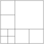
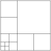
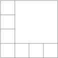

Section3.1Proofs by induction
In mathematics one often uses induction to prove general statements. Let us see how this argument works. Suppose we have a statement \(S(n)\) which depends on \(n\text{.}\) When we apply induction we prove that \(S(n_0)\) is true for the smallest possible value \(n_0\text{.}\) Then we show that if the statement is true for all possible values less than \(n\text{,}\) then the statement is also true for \(n\text{.}\) Finally, we conclude that the statement is true for all \(n\geq n_0\text{.}\) There is a very similar notion called recursion. For example we can define \(n!\) as follows
\begin{equation*}
n!=
\begin{cases}
1 \amp \mbox{ if } n=1,\\
n\cdot(n-1)! \amp \mbox{ if } n>1.
\end{cases}
\end{equation*}
The basic idea is that we can compute e.g. \(100!\) if we have computed \(99!\text{,}\) \(98!\text{,}\) \(\ldots\text{,}\) \(1!\text{.}\) Induction works in the same way, if we can prove a statement for certain smaller instances, then we can prove it for large values as well. More about recursion will follow in Chapter 5.
Now we study induction in more detail.
Theorem3.1.1Mathematical Induction I
Let \(S(n)\) be a statement depending on \(n\in\mathbb{N}\text{.}\) Suppose that
\(S(1)\) is true,
if \(S(k)\) is true for some \(k\in\mathbb{N}\text{,}\) then \(S(k+1)\) is true.
Then \(S(n)\) is true for all \(n\in\mathbb{N}\text{.}\)
Proof
Suppose that the statement \(S(n)\) is false for some \(n\geq 1\text{.}\) Denote by \(m\) the smallest such value. We have that \(m>1\text{,}\) since by part \((a)\) we know that \(S(1)\) is true. Since \(m\) is as small as possible, \(S(k)\) is true for \(1\leq k \lt m\text{.}\) As a special case we have that \(S(m-1)\) is true. From part \((a)\) and \((b)\) one obtains that the statement is true for \(S(m-1+1)=S(m)\text{.}\) Thus the assumption that \(S(n)\) is false for same \(n\geq 1\) is false.
Let us consider a simple example. Let \(S(n)\) be the statement that 7 divides \(8^n-1\text{.}\) First we do some numerical experiments
|
|
| \(n\) |
\(8^n-1\) |
|
|
| 1 |
\(7=1\cdot 7\) |
|
|
| 2 |
\(63=9\cdot 7\) |
|
|
| 3 |
\(511=73\cdot 7\) |
|
|
that is, the statement is true for \(n\in\halmaz{1,2,3}\text{.}\) Hence part \((a)\) of the theorem is fulfilled. Assume that \(S(k)\) is true for some \(k\in\mathbb{N}\text{.}\) It remains to be proved that \(S(k+1)\) is true. We have that \(S(k)\) is true, that is, 7 divides \(8^k-1\text{.}\) Hence there exists an integer \(A\) such that \(8^k-1=7\cdot A\text{.}\) We would like to prove that \(8^{k+1}-1\) is a multiple of 7 as well. We try to express \(8^{k+1}-1\) using \(8^k-1\text{.}\) A natural idea is to multiply the equation \(8^k-1=7\cdot A\) by 8:
\begin{equation*}
8(8^k-1)=7\cdot A\cdot 8\text{,}
\end{equation*}
that is,
\begin{equation*}
8^{k+1}-8=7\cdot A\cdot 8\text{.}
\end{equation*}
Now we add 7 to obtain the right form on the left-hand side:
\begin{equation*}
8^{k+1}-1=7\cdot A\cdot 8+7=7(8A+1)\text{.}
\end{equation*}
It means that \(S(k+1)\) is true since we got that \(8^{k+1}-1\) is divisible by 7.
Another area where induction can often be applied is proving mathematical identities. Now we prove that the sum of the first \(n\) positive integers is \(\frac{n(n+1)}{2}\text{.}\) Let us compute the sum of the first \(n\) integers for \(n\in\halmaz{1,2,3,4,5}\)
|
|
| \(n\) |
\(\sum_{i=1}^n i\) |
|
|
| 1 |
\(1=\frac{1\cdot 2}{2}\) |
|
|
| 2 |
\(1+2=\frac{2\cdot 3}{2}\) |
|
|
| 3 |
\(1+2+3=\frac{3\cdot 4}{2}\) |
|
|
| 4 |
\(1+2+3+4=\frac{4\cdot 5}{2}\) |
|
|
| 5 |
\(1+2+3+4+5=\frac{5\cdot 6}{2}\) |
|
|
So it seems that the formula is correct. However, we have not proved the statement, we only checked that the statement is correct for \(n\in\halmaz{1,2,3,4,5}\text{.}\) Here \(S(n)\) is the statement that the sum of the first \(n\) positive integers is \(\frac{n(n+1)}{2}\text{.}\) We have that \(S(1)\) is true. Assume that \(S(k)\) is true for some \(k\geq 1\text{,}\) that is,
\begin{equation*}
\sum_{i=1}^k i=\frac{k(k+1)}{2}\text{.}
\end{equation*}
We have to prove that \(S(k+1)\) is true. That is, we have to consider the sum of the first \(k+1\) integers, which is
\begin{equation*}
\sum_{i=1}^{k+1} i =1+2+\ldots+k+(k+1)=(1+2+\ldots+k)+(k+1)\text{.}
\end{equation*}
By the induction hypothesis
\begin{equation*}
1+2+\ldots+k=\frac{k(k+1)}{2}\text{.}
\end{equation*}
Therefore we get
\begin{equation*}
\sum_{i=1}^{k+1} i =\frac{k(k+1)}{2}+(k+1)=\frac{k^2+k+2k+2}{2}=\frac{(k+1)(k+2)}{2}\text{.}
\end{equation*}
Thus \(S(k+1)\) is true and we proved that the sum of the first \(n\) integers is
\begin{equation*}
\frac{n(n+1)}{2}
\end{equation*}
for all \(n\in\mathbb{N}\text{.}\) (Note, that we have proved this identity with other methods in Proposition 2.0.1.)
There are statements which are false for certain small values, but for large values they hold. You can find such problems in the following section related to linear Diophantine equations. So it is useful to state the above theorem in a different form as well. We omit the proof since it is very similar to the proof of the previous theorem.
Theorem3.1.2Mathematical Induction II
Let \(S(n)\) be a statement depending on \(n\in\mathbb{N}\text{.}\) Suppose that
\(S(n_0)\) is true,
if \(S(k)\) is true for some \(n_0\leq k\in\mathbb{N}\text{,}\) then \(S(k+1)\) is true.
Then \(S(n)\) is true for all \(n_0\leq n\in\mathbb{N}\text{.}\)
As an application we prove that \(3^n>n^3+3\) for all \(n\geq 4\text{.}\) It is easy to see that the statement is false for \(n=1\text{.}\) We have \(3^1\) and \(1^3+3=4\text{,}\) that is, the inequality does not hold. In this problem \(n_0=4\text{,}\) so the first step is to prove that
\begin{equation*}
3^4>4^3+3\text{.}
\end{equation*}
Here we have 81 on the left-hand side and 67 on the right-hand side, hence \(S(n_0)=S(4)\) is true. Assume that \(S(k)\) is true for some \(4\leq k\in\mathbb{N}\text{.}\) So the induction hypothesis is that
\begin{equation*}
3^k>k^3+3\text{.}
\end{equation*}
We need to show that \(S(k+1)\) is true, that is,
\begin{equation*}
3^{k+1}>(k+1)^3+3\text{.}
\end{equation*}
From the induction hypothesis we get
\begin{equation*}
3^{k+1}>3k^3+9\text{.}
\end{equation*}
If we can prove that \(3k^3+9>(k+1)^3+3\) for \(k\geq 4\text{,}\) then \(S(k+1)\) follows. We rewrite the inequality \(3k^3+9>(k+1)^3+3\) as follows:
\begin{equation*}
2k^3-3k^2-3k+5>0\text{.}
\end{equation*}
It is sufficient to show that \(k(2k^2-3k-3)\geq 0\) for \(k\geq 4\text{.}\) It is enough to prove that \(k(2k-3)\geq 3\) for \(k\geq 4\text{.}\) We have that \(k\geq 4\) so \(2k-3\geq 5\text{,}\) hence the product \(k(2k-3)\) is at least 20. We obtained that \(3k^3+9>(k+1)^3+3\text{,}\) so we conclude that \(S(k+1)\) is true, therefore \(3^n>n^3+3\) for all \(n\geq 4\text{.}\)
We provide a third version of the original theorem about induction.
Theorem3.1.3Mathematical Induction III
Let \(S(n)\) be a statement depending on \(n\in\mathbb{N}\text{.}\) Let \(m_0 , n_0\geq 1\text{.}\) Suppose that
\(S(m_0),S(m_0+1)\ldots,S(m_0+n_0-1)\) are true,
if \(S(k-n_0+1),\ldots,S(k)\) are true for some \(m_0+n_0-1\leq k\in\mathbb{N}\text{,}\) then \(S(k+1)\) is true.
Then \(S(n)\) is true for all \(m_0\leq n\in\mathbb{N}\text{.}\)
Now we apply induction to prove certain inequalities. Let \(\halmaz{T_n}\) be a sequence defined by \(T_1=T_2=T_3=1\) and \(T_n=T_{n-1}+T_{n-2}+T_{n-3}\) for \(n\geq 4\text{.}\) We prove by induction that for all positive integer \(n\)
\begin{equation*}
T_n\lt 2^n\text{.}
\end{equation*}
Let \(S(n)\) be the statement that \(T_n\lt 2^n\text{.}\) Obviously we have that \(S(1),S(2),S(3)\) are true. Assume that for some \(3\leq k\in\mathbb{N}\) the statements \(S(k-2),S(k-1)\) and \(S(k)\) are true, that is,
\begin{align*}
T_{k-2}\amp \lt 2^{k-2},\\
T_{k-1}\amp \lt 2^{k-1},\\
T_{k}\amp \lt 2^{k}\text{.}
\end{align*}
Consider \(S(k+1)\text{.}\) We should prove the inequality \(T_{k+1}\lt 2^{k+1}\text{.}\) By definition
\begin{equation*}
T_{k+1}=T_{k}+T_{k-1}+T_{k-2}\text{,}
\end{equation*}
therefore
\begin{equation*}
T_{k+1}\lt 2^k+2^{k-1}+2^{k-2}=2^{k-2}(4+2+1)\lt 8\cdot 2^{k-2}=2^{k+1}\text{.}
\end{equation*}
Thus \(S(k+1)\) is true and we proved that \(T_n\lt 2^n\) for all positive integers \(n\text{.}\)
To further demonstrate how to apply the latter version of induction we consider a problem about an integer sequence. Let \(\halmaz{a_n}\) be a sequence of integers such that
\begin{align*}
a_1\amp =1,\\
a_2\amp =5,\\
a_n\amp =5a_{n-1}-6a_{n-2} n\geq 3\text{.}
\end{align*}
Prove that \(a_n=3^n-2^n\) for all \(n\geq 1\text{.}\) We apply Mathematical Induction III. with \(n_0=2\text{.}\) To complete part \((a)\) we have to show that \(S(1)\) and \(S(2)\) are true. We have that \(a_1=1\) by definition and the formula yields \(3^1-2^1=1\text{,}\) so \(S(1)\) is true. Similarly for \(S(2)\text{,}\) by definition \(a_2=5\) and the formula gives \(3^2-2^2=9-4=5\text{.}\) Hence we can go further and consider part \((b)\text{.}\) Assume that \(S(k-1)\) and \(S(k)\) are true for some \(2\leq k\in\mathbb{N}\text{.}\) That is,
\begin{align*}
a_{k-1}\amp =3^{k-1}-2^{k-1},\\
a_k\amp =3^k-2^k\text{.}
\end{align*}
From the induction hypothesis we should conclude that \(S(k+1)\) is true, that is,
\begin{equation*}
a_{k+1}=3^{k+1}-2^{k+1}\text{.}
\end{equation*}
Since \(k+1\geq 3\text{,}\) by definition \(a_{k+1}=5a_{k}-6a_{k-1}\text{.}\) Therefore by the induction hypothesis
\begin{equation*}
a_{k+1}=5(3^k-2^k)-6(3^{k-1}-2^{k-1})=3^{k+1}-2^{k+1}\text{.}
\end{equation*}
Thus \(S(k+1)\) is true and we have that \(a_n=3^n-2^n\) for all \(n\geq 1\text{.}\)
In the previous examples the first steps were easier, that is, to prove the statement for \(k=1\) or for some \(k=n_0\text{.}\) It is not always the case as the following problems show.
Prove that for any \(n > 5\text{,}\) it is possible to divide a square into \(n\) smaller squares not necessarily all the same size. It is not obvious that one can apply induction here. It is easy to figure out that if \(n=m^2\text{,}\) then a solution is not difficult to find. One considers an \(m\) by \(m\) grid. To apply induction we have to solve the problem for small values e.g. \(n=6\text{.}\) A solution is given by
Having a solution for \(n=6\) one can provide solutions for \(n=9,12,\ldots\)
| \(n=6\) |
\(n=9\) |
\(n=12\) |
|
 |
 |
This process works in general, if we have a solution for some \(n\text{,}\) then by subdividing a square into 4 squares we obtain a solution for \(n+3\text{.}\) We have an argument for part \((b)\) in Mathematical Induction III., namely with \(n_0=3\text{.}\) If \(S(k-2),S(k-1),S(k)\) is true, then \(S(k+1)\) is true (since it follows from \(S(k-2)\) in this case). It remains to deal with part \((a)\text{,}\) that is, we have to show that \(S(6),S(7)\) and \(S(8)\) are true. We have considered the case \(n=6\text{.}\) Let us find a solution for \(n=7\text{.}\) We note that the case \(n=4\) is easy since 4 is a square. The process we described allows us to construct a solution for \(n=4+3=7\text{.}\)
Finally we handle the remaining case, that is, \(n=8\text{.}\) Here we have the solution:

Exercise3.1.4
Prove that \(9^n-1\) is divisible by 8 for all \(n\in\mathbb{N}\text{.}\)
Exercise3.1.5
Prove that \(5^{2n-1}+1\) is divisible by 6 for all \(n\in\mathbb{N}\text{.}\)
Exercise3.1.6
Prove the following identity by induction
\begin{equation*}
\sum_{i=1}^n (2i-1)=n^2\text{.}
\end{equation*}
Exercise3.1.7
Prove the following identity by induction
\begin{equation*}
\sum_{i=1}^n i^2=\frac{n(n+1)(2n+1)}{6}\text{.}
\end{equation*}
Exercise3.1.8
Prove the following identity by induction
\begin{equation*}
\sum_{i=1}^n i^3=\left(\frac{n(n+1)}{2}\right)^2\text{.}
\end{equation*}
Exercise3.1.9
Prove the following identity by induction
\begin{equation*}
\sum_{i=1}^{n-1} {i(i+1)}=\frac{\left(n-1\right)n\left(n+1\right)}{3}\text{.}
\end{equation*}
Exercise3.1.10
Prove the following identity by induction
\begin{equation*}
\sum_{i=1}^n\frac{1}{i(i+1)}=\frac{n}{n+1}\text{.}
\end{equation*}
Exercise3.1.11
Let \(\halmaz{a_n}\) be a sequence defined by
\begin{align*}
a_1\amp =1,\\
a_2\amp =8,\\
a_n\amp =a_{n-1}+2a_{n-2}, n\geq 3\text{.}
\end{align*}
Prove that
\begin{equation*}
a_n=\frac{3}{2}\cdot 2^n+2 \cdot (-1)^n\text{.}
\end{equation*}
Exercise3.1.12
Prove by induction that the number
\begin{equation*}
\left(\frac{3-\sqrt{33}}{2}\right)^n+\left(\frac{3+\sqrt{33}}{2}\right)^n
\end{equation*}
is an integer which is divisible by 3 for all \(n\in\mathbb{N}\text{.}\)
Exercise3.1.13
Let \(\halmaz{a_n}\) be a sequence defined by
\begin{align*}
a_1\amp =\sqrt{2},\\
a_n\amp =\sqrt{2+a_{n-1}} n\geq 2\text{.}
\end{align*}
Prove by induction that \(a_n\leq 2\) for all \(n\geq 1\text{.}\)
Exercise3.1.14
Prove that for all \(n\in\mathbb{N}\) there exists an \(n\)-digit integer
\begin{equation*}
a_1a_2\ldots a_n
\end{equation*}
whose digits are either 1 or 2 and it is divisible by \(2^n\text{.}\)
Exercise3.1.15
Let \(F_n\) be a sequence defined by \(F_1=F_2=1\) and \(F_n=F_{n-1}+F_{n-2}, n\geq 3\) (this sequence is the so-called Fibonacci sequence). Prove by induction the following identities.
(a) \(F_1+F_2+\ldots+F_n=F_{n+2}-1\text{,}\)
(b) \(F_1^2+F_2^2+\ldots+F_n^2=F_nF_{n+1}\text{,}\)
(c) \(F_1+F_3+\ldots+F_{2n-1}=F_{2n}\text{,}\)
(d) \(F_2+F_4+\ldots+F_{2n}=F_{2n+1}-1\text{.}\)
Exercise3.1.16
Prove the following properties of Fibonacci numbers.
(a) Prove that \(F_{3n}\) is even for all \(n\in\mathbb{N}\text{.}\)
(b) Prove that \(F_{5n}\) is divisible by 5 for all \(n\in\mathbb{N}\text{.}\)